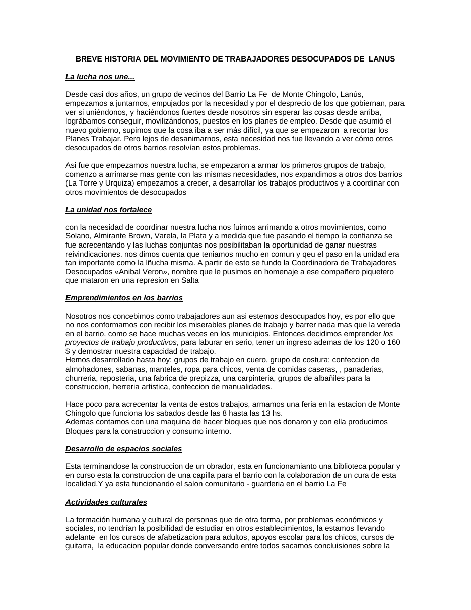

Primera hoja de DOS TEXTOS PARA EL BOLETÍN BARRIAL.doc. Clic en la imagen para abrir o descargar el archivo original.·25.0 KB·2 hojas, la imagen muestra la primera

La lucha nos une...
Desde casi dos años, un grupo de vecinos del Barrio La Fe de Monte Chingolo, Lanús, empezamos a juntarnos, empujados por la necesidad y por el desprecio de los que gobiernan, para ver si uniéndonos, y haciéndonos fuertes desde nosotros sin esperar las cosas desde arriba, lográbamos conseguir, movilizándonos, puestos en los planes de empleo. Desde que asumió el nuevo gobierno, supimos que la cosa iba a ser más difícil, ya que se empezaron a recortar los Planes Trabajar. Pero lejos de desanimarnos, esta necesidad nos fue llevando a ver cómo otros desocupados de otros barrios resolvían estos problemas.
Asi fue que empezamos nuestra lucha, se empezaron a armar los primeros grupos de trabajo, comenzo a arrimarse mas gente con las mismas necesidades, nos expandimos a otros dos barrios (La Torre y Urquiza) empezamos a crecer, a desarrollar los trabajos productivos y a coordinar con otros movimientos de desocupados
La unidad nos fortalece
con la necesidad de coordinar nuestra lucha nos fuimos arrimando a otros movimientos, como Solano, Almirante Brown, Varela, la Plata y a medida que fue pasando el tiempo la confianza se fue acrecentando y las luchas conjuntas nos posibilitaban la oportunidad de ganar nuestras reivindicaciones. nos dimos cuenta que teniamos mucho en comun y qeu el paso en la unidad era tan importante como la lñucha misma. A partir de esto se fundo la Coordinadora de Trabajadores Desocupados «Anibal Veron», nombre que le pusimos en homenaje a ese compañero piquetero que mataron en una represion en Salta
Emprendimientos en los barrios
Nosotros nos concebimos como trabajadores aun asi estemos desocupados hoy, es por ello que no nos conformamos con recibir los miserables planes de trabajo y barrer nada mas que la vereda en el barrio, como se hace muchas veces en los municipios. Entonces decidimos emprender los proyectos de trabajo productivos, para laburar en serio, tener un ingreso ademas de los 120 o 160 $ y demostrar nuestra capacidad de trabajo.
Hemos desarrollado hasta hoy: grupos de trabajo en cuero, grupo de costura; confeccion de almohadones, sabanas, manteles, ropa para chicos, venta de comidas caseras, , panaderias, churreria, reposteria, una fabrica de prepizza, una carpinteria, grupos de albañiles para la construccion, herreria artistica, confeccion de manualidades.
Hace poco para acrecentar la venta de estos trabajos, armamos una feria en la estacion de Monte Chingolo que funciona los sabados desde las 8 hasta las 13 hs.
Ademas contamos con una maquina de hacer bloques que nos donaron y con ella producimos Bloques para la construccion y consumo interno.
Desarrollo de espacios sociales
Esta terminandose la construccion de un obrador, esta en funcionamianto una biblioteca popular y en curso esta la construccion de una capilla para el barrio con la colaboracion de un cura de esta localidad.Y ya esta funcionando el salon comunitario - guarderia en el barrio La Fe
Actividades culturales
La formación humana y cultural de personas que de otra forma, por problemas económicos y sociales, no tendrían la posibilidad de estudiar en otros establecimientos, la estamos llevando adelante en los cursos de afabetizacion para adultos, apoyos escolar para los chicos, cursos de guitarra, la educacion popular donde conversando entre todos sacamos concluisiones sobre la realidad que vivimos estas actividades se realizan con el apoyo de compañeros que se arriman a colabaorar sea de la facultad de sociales, de la escuela de musica popular de Avellaneda, de la universidad de las madres de Plaza de Mayo.
el festejo de los cumpleaños de todos los chicos los fin de mes
Nuestros principios organizativos
como organizacion popular cada paso que damos, las medidas de lucha, la creacion de nuevos trabajos, etc, las decidimos entre todos, menteniendo nuestro principio de la democracia. para que este principio se mantenga en el MTD no existen gerarquias, no hay presidente, ni cargos de ningun tipo, solo hay responsabilidades delegadas en los comapñeros mas comprometidos de esta forma nuestra organizacion de tipo horizontal
otros de nuestros principios es mantener la autonomia, nosotros no nos «casamos con nadie» cada cosa realizada es hecha a pulmon y conseguida con la lucha.
Situacion actual.
El gobierno anuncio un nuevo ajuste intentando cortar definitivamanete los planes trabajar.
Los planes fueron fuente de organización, mejoras en los barrios donde se desarrollan, e incluso posibilidad de poner en marcha proyectos productivos a pequeña escala que permitía a los trabajadores desocupados reconvertir sus saberes en emprendimientos propios
todo esto para el gobierno se torna un peligro, y atacan este desarrollo de los movimientos de desocupados. Lo vienen haciendo con denuncias, represiones y encarcelamientos, y lo hacen ahora por medio de estas medidas de esta forma buscan inhibir la organización popular que en estos años se vino desarrollando para potenciar la miserable política de asistencia que se implementa desde el Estado.
Una vez mas, los desocupados no no sqeudaremos de brazos cruzados, saldremas a defender nuestra fuaente laboral, peleando como lo venimos haciendo desde hace dos años.
Solo queremos vivir en un mundo con justicia e igualdad
Transcripción del documento original DOS TEXTOS PARA EL BOLETÍN BARRIAL.doc. Se conserva la ortografía del original.